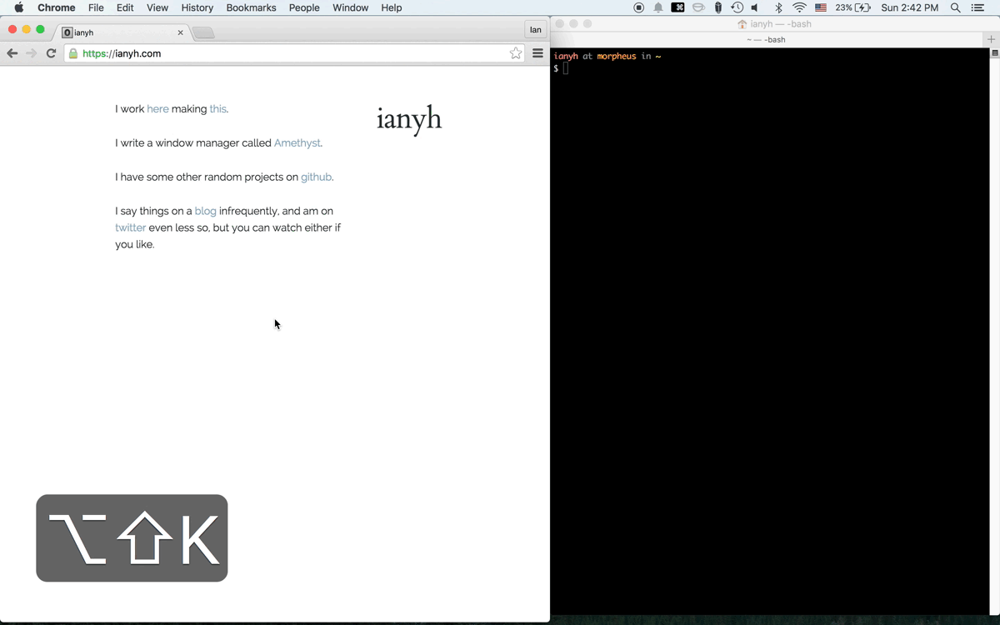

Work More Efficiently on a Mac
Table of Contents
Less is more, trust me.
Managing dotfiles in org-babel.
I used to have almost 80% configurations that I stole from other people on internet which are never used. Why? Maybe because I did not think why i need them, thoese things jsut did not be adopted in my daily workflow.
org-babel is a way that you can embed your codeblock in your literatures. I've ever saw people use it to manage their Emacs configuration many times, and think it might be easy to manage my dotfiles also.
so, here you are, this is a post remains me why I need to theses configuration, how can I be more productivity, but it is also used to export all my configurations on mac.
Should you interest to see original source file, please visit here.
Better Keyboard Configuration
- Remaps Capslock To Ctrl
I am a fan of Emacs but prefer VIM style editing (which leads me to start using spacemacs), Capslock is useless, I never use it. Luckly, it seems a good place to put Ctrl/Escape there.
- Go into the Keyboard preference pane.
- Click "Modifier Keys…", and change Caps Lock to Control.
- Download the lastest version of Seli.
- Open Seli and go other keys section to Change CtrlL
- Remaps Capslock to Escape
- Download the lastest version of Karabiner.
- go into Karabiner and search for this option:
ControlL to ControlL
(+ when you type ControlL only, send Escape)
- Remaps Ctrl-L to Hypher
To define Hyper as control+option+command+shift.
- open Karabiner and go to Misc & Uninstall > Open private.xml).
- Add this XML snippet directly under the <root> element.
<?xml version="1.0"?> <item> <name>Remap Left Control to Hyper</name> <appendix>OS X doesn't have a Hyper. This maps Left Control to Control + Shift + Option + Command.</appendix> <identifier>space_cadet.left_control_to_hyper</identifier> <autogen> --KeyToKey-- KeyCode::F19, KeyCode::COMMAND_L, ModifierFlag::OPTION_L | ModifierFlag::SHIFT_L | ModifierFlag::CONTROL_L </autogen> </item>
- Save the file, then open Karabiner and press ReloadXML in the upper-right of the Change Key tab.
- search for Remap Caps and check the box.
- open Karabiner and go to Misc & Uninstall > Open private.xml).
- References
Use Tiling Window Manager
Don't organize windows by yourself, let the computer do it. Have you ever aware how much times you spend to organize windows?
Most of times, What you need is having 2 applications that 1 one left and one on right in same screen, for example, you may want to have browser on left, and a editor on right. Yo always need to move applications to proper position on your screen after launch them.
I can't help to organize windows by my self anymore after I tried one of best tiling window managers on Linux - XMonad.
It is still, still one killer application I can't find replacement on MAC until now, even I found Amethyst and it do really fit some of my needs.
- Get Amethyst

- Setup
The default configuration of amethyst is good enought to use, but it can do better by having the following preferences.
- set first modifier to Hypher(which is my original left control key).
- floating smal windows.
- Usage
Key Descriptions Hypher + space cycle to next layout Hypher + h shrink the main pane Hypher + l expand the main pane Hypher + j focus the next window counterclockwise Hypher + k focus the next window clockwise Hypher + return swap the focused window with the main window Hypher + t toggle whether or not the focused window is floating
Use Zsh
I switched to zsh from bash a while, oh-my-zsh is first framwork I used. It is handy and well documented, but what did not stastify me is its slow startup times, Antigen shares same issue with oh-my-zsh, finally I tried zplug and very happy with its speed and flexibility - To be able use plugins of oh-my-zsh and have better response time.
This configuration is specified for Mac users only because I moved to Mac from Linux since 2013.
- Installation
brew install zsh git clone https://github.com/b4b4r07/zplug ~/.zplug chsh -s /usr/local/bin/zsh
- Initialization
source ~/.zplug/zplug - Command Search PATH
export PATH=${HOME}/bin:${HOME}/.local/bin:/usr/local/bin:${PATH}
- Default Editor
export EDITOR=vim
- VIM mode
zplug "plugins/vi-mode", from:oh-my-zsh - Theme
zplug "themes/pygmalion", from:oh-my-zsh - Syntax Highlight
zplug "zsh-users/zsh-syntax-highlighting", nice:10 - History Search
Type in any part of any previously entered command and press the UP and DOWN arrow keys to cycle through the matching commands. You can also use K and J in VI mode or ^P and ^N in EMACS mode for the same.
zplug "zsh-users/zsh-history-substring-search"- Bind UP and DOWN arrow keys
zmodload zsh/terminfo bindkey "$terminfo[kcuu1]" history-substring-search-up bindkey "$terminfo[kcud1]" history-substring-search-down
- Bind P and N for EMACS mode
bindkey -M emacs '^P' history-substring-search-up bindkey -M emacs '^N' history-substring-search-down
- Bind k and j for VI mode
bindkey -M vicmd 'k' history-substring-search-up
- Bind UP and DOWN arrow keys
- Git
zplug "plugins/git", from:oh-my-zsh - OSX Enhancement
- brew auto completion.
zplug "plugins/brew", from:oh-my-zsh - NodeJS Development Env
- Install plugins automatically
zplug check return true if all plugins are installed Therefore, when it returns not true (thus false), run zplug install
if ! zplug check; then zplug install fi
- Loads Zplug Plugins.
zplug load --verbose
- Aliases & Additonal Commands
- List all branchs in tig by default.
which tig >/dev/null && alias tig=tig --all
- Searches files with names containing a string
f: searches the current directory subtree for files with names containing a string (ignoring case). f png would find all PNG files in the current subtree, as well as “PNGisMyFavorite.txt” and so forth.
function f() { find . -iname "*$1*" ${@:2} }
- Greps the current directory subtree for files matching a pattern.
r: recursively greps the current directory subtree for files matching a pattern. r HTTP would grep for files containing that exact string, while r '"http[^"]*"' -i would search for double-quoted strings starting with “http”, ignoring case.
function r() { grep "$1" ${@:2} -R . }
- List all branchs in tig by default.
- Put it all together
source ~/.zplug/zplug export PATH=${HOME}/bin:${HOME}/.local/bin:/usr/local/bin:${PATH} export EDITOR=vim zplug "plugins/vi-mode", from:oh-my-zsh zplug "themes/pygmalion", from:oh-my-zsh zplug "zsh-users/zsh-syntax-highlighting", nice:10 zplug "zsh-users/zsh-history-substring-search" zmodload zsh/terminfo bindkey "$terminfo[kcuu1]" history-substring-search-up bindkey "$terminfo[kcud1]" history-substring-search-down bindkey -M emacs '^P' history-substring-search-up bindkey -M emacs '^N' history-substring-search-down bindkey -M vicmd 'k' history-substring-search-up zplug "plugins/git", from:oh-my-zsh zplug "plugins/brew", from:oh-my-zsh zplug "plugins/npm", from:oh-my-zsh export NVM_DIR=~/.nvm source $(brew --prefix nvm)/nvm.sh if ! zplug check; then zplug install fi zplug load --verbose which tig >/dev/null && alias tig=tig --all function f() { find . -iname "*$1*" ${@:2} } function r() { grep "$1" ${@:2} -R . }
Use VIM
Normally I use Emacs to write codes and documents, but sometimes I do quick modification on terminal by using VIM.
- Syntax Highlight
syntax on
- Highlight and strip eatra white spaces
Highlight existing trailing whitespace and also strip trailing whitespace.
highlight ExtraWhitespace ctermbg=red guibg=red match ExtraWhitespace /\s\+$/ autocmd BufWinEnter * match ExtraWhitespace /\s\+$/ autocmd InsertEnter * match ExtraWhitespace /\s\+\%#\@<!$/ autocmd InsertLeave * match ExtraWhitespace /\s\+$/ autocmd BufWinLeave * call clearmatches()
- Put it all together
syntax on highlight ExtraWhitespace ctermbg=red guibg=red match ExtraWhitespace /\s\+$/ autocmd BufWinEnter * match ExtraWhitespace /\s\+$/ autocmd InsertEnter * match ExtraWhitespace /\s\+\%#\@<!$/ autocmd InsertLeave * match ExtraWhitespace /\s\+$/ autocmd BufWinLeave * call clearmatches()
Use Git
Git is a widely used source code management system.
- Workflow
When I start to develop something, my workflow always looks like:
- run git fetch, git rebase to get other people's changes.
- do some experimients.
- run git save to save current codebase, so I can go back if I screw up my code later.
- do some experimients.
- run git wipe if I don't like the result and want to throw current modifications to the hell.
- do some experimients.
- run git save.
- do some experimients.
- run git undo, if I want to commit some changes.
- run git save.
- run git r to re-organize my commit logs.
- run git push to deliver my works or save on cloud.
- Installation
brew install git
- Set up my name and e-mail address
both of which are included in every commit i make.
[user] name = 陳信屹 email = ossug.hychen@gmail.com
- Caching password in git
Cloning Github repositories using HTTPS is better than using SSH when you want to access those repositories in multiple deivces. The only annoy thing is you need to type password everytime and this caches your GitHub password in Git.
[credential] helper = osxkeychain
- Change git push behavior to simple
When pushing without giving a refspec, push the current branch to its remote branch.
[push] default = simple
- Disable advices which isnt useful anymore
It was useful when i was a beginer, but now it is annoy to me as a 老手!
- Disable the advice shown by Git when you attempt to push something that’s not fast forward-able
- Disable “how to stage/unstage/add” hints given by git status.
[advice] pushNonFastForward = false statusHints = false
- Useful Aliases
This saves a lot time, and I think you should do too!.
Alias Description s View the current working tree status using the short format with branch information. l View abbreviated SHA, description, and history graph of the latest 50 commits c Clone a repository including all submodules ci Normal git commit ca Commit all changes co Normal git checkout p git push save Adds all changes including untracked files and creates a commit as a savepoint. undo Resets the previous commit, but keeps all the changes from that commit in the working directory wipe Commit everything and then do hard reset. r rebase lastest 15 commits fc Find commits by source coude fm Find commits by commit message contributors List contributors with number of commits [alias] s = status -sb l = log --pretty=oneline -n 50 --graph --abbrev-commit c = clone --recursive ci = commit ca = !git add -A && git commit -av co = checkout p = push save = !git add -A && git commit -v 'SAVEPOINT' undo = reset HEAD~1 --mixed wipe = !git add -A && git commit -qm 'WIPE SAVEPOINT' && git reset HEAD~1 --hard r = rebase -i HEAD~15 fc = "!f() { git log --pretty=format:'%C(yellow)%h %Cblue%ad %Creset%s%Cgreen [%cn] %Cred%d' --decorate --date=short -S$1; }; f" fm = "!f() { git log --pretty=format:'%C(yellow)%h %Cblue%ad %Creset%s%Cgreen [%cn] %Cred%d' --decorate --date=short --grep=$1; }; f" contributors = shortlog --summary --numbered
- Put it all together
[user] name = 陳信屹 email = ossug.hychen@gmail.com [credential] helper = osxkeychain [push] default = simple [advice] pushNonFastForward = false statusHints = false [alias] s = status -sb l = log --pretty=oneline -n 50 --graph --abbrev-commit c = clone --recursive ci = commit ca = !git add -A && git commit -av co = checkout p = push save = !git add -A && git commit -v 'SAVEPOINT' undo = reset HEAD~1 --mixed wipe = !git add -A && git commit -qm 'WIPE SAVEPOINT' && git reset HEAD~1 --hard r = rebase -i HEAD~15 fc = "!f() { git log --pretty=format:'%C(yellow)%h %Cblue%ad %Creset%s%Cgreen [%cn] %Cred%d' --decorate --date=short -S$1; }; f" fm = "!f() { git log --pretty=format:'%C(yellow)%h %Cblue%ad %Creset%s%Cgreen [%cn] %Cred%d' --decorate --date=short --grep=$1; }; f" contributors = shortlog --summary --numbered
- References